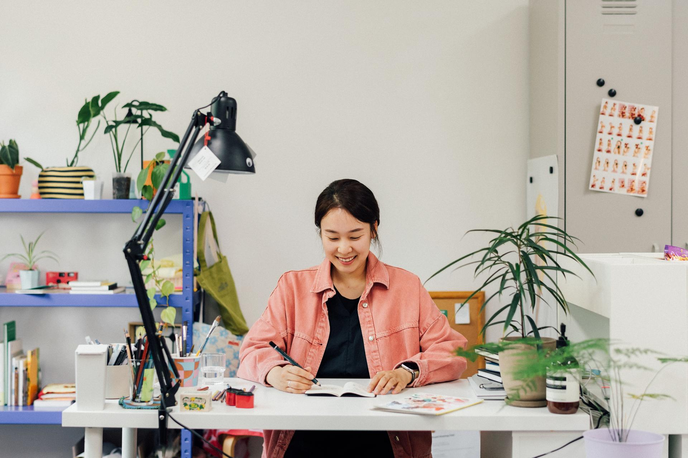
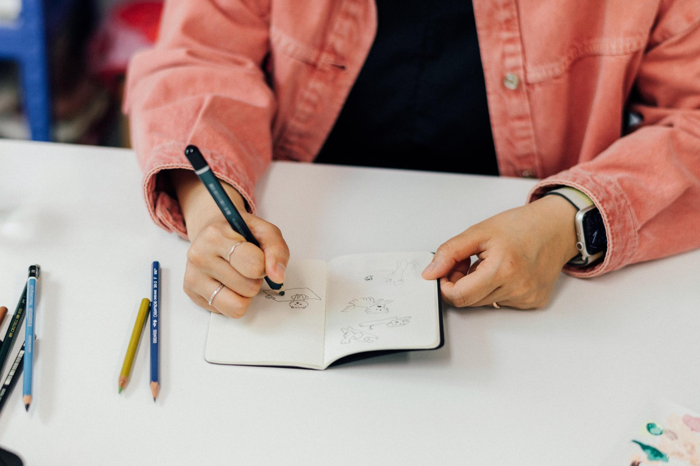
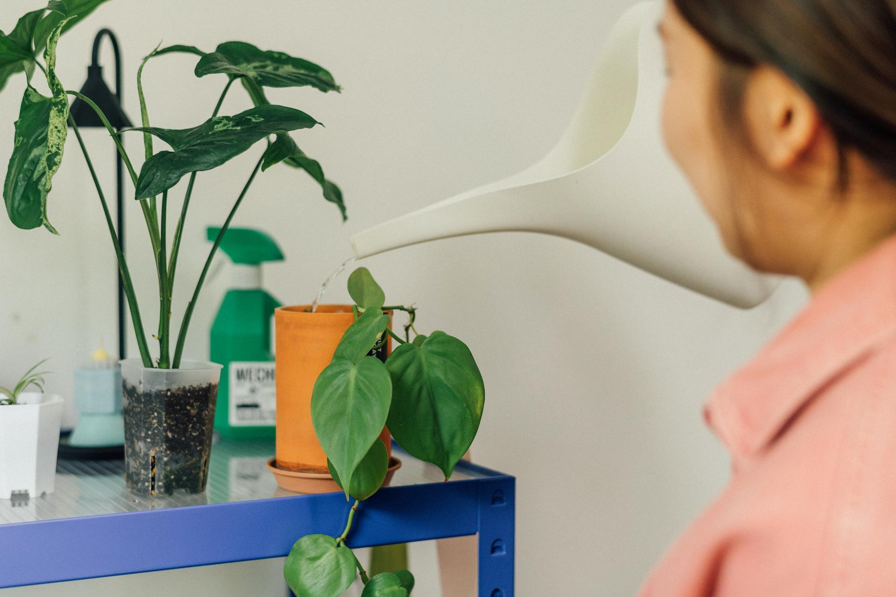
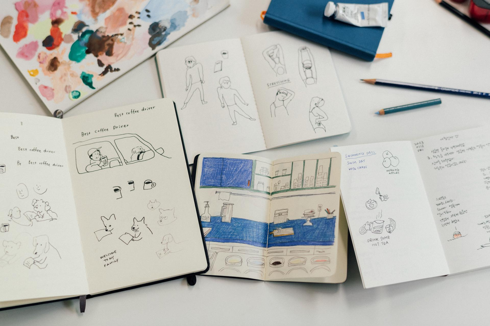
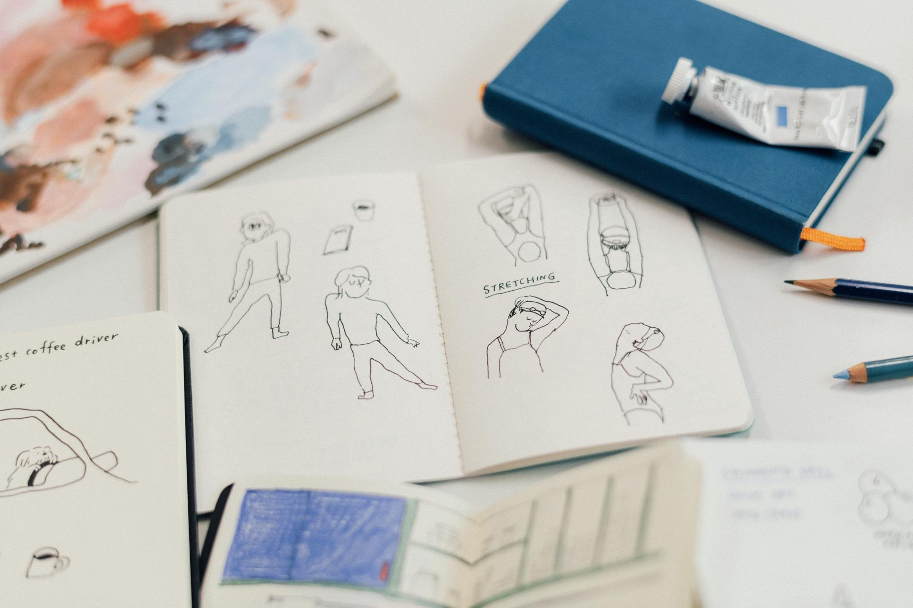
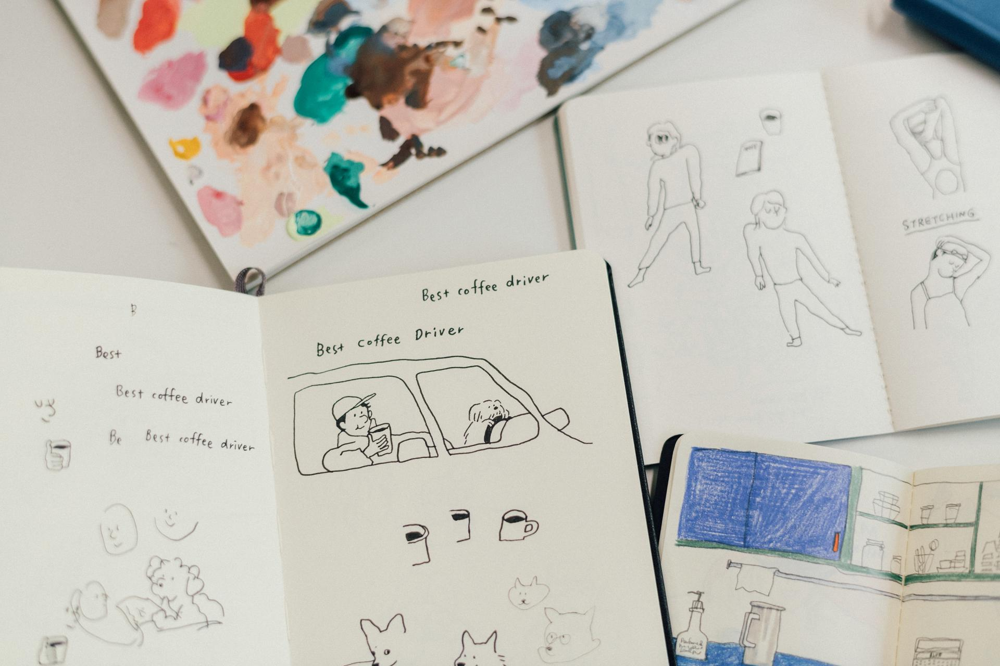
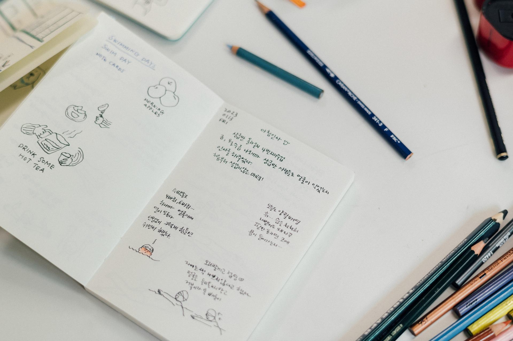
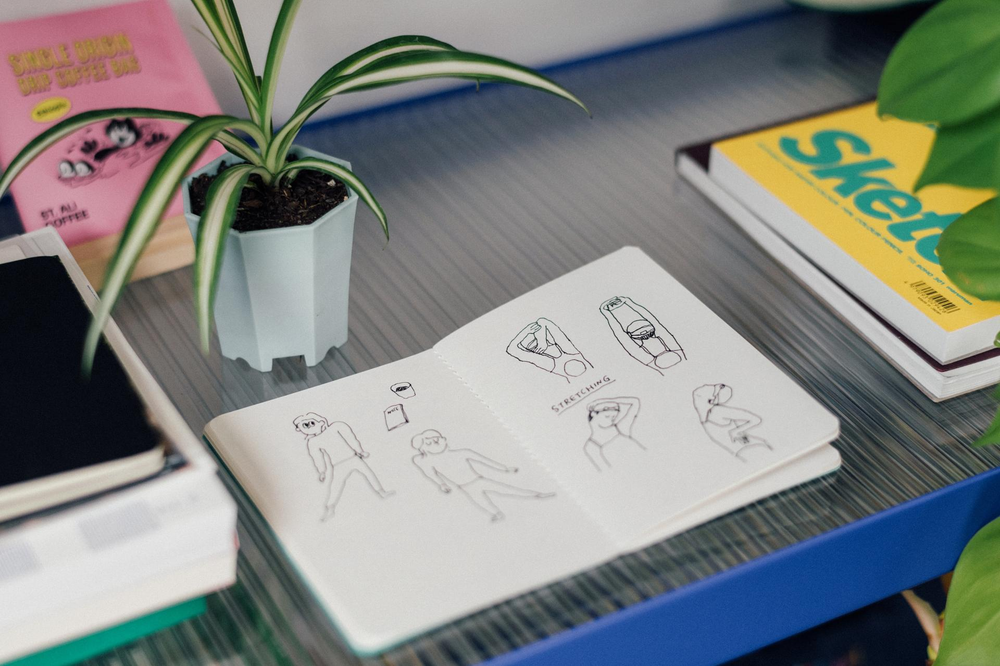

나답게 성장하는 사람들이 만들어가는 안전한 커뮤니티 '밑미'에서 〈아침 15분 낙서하듯 그리기〉라는 리추얼에 리추얼메이커로 활동하고 있습니다. 혼자서 매일 아침 그림으로 하루를 시작해보겠다는 목표로 아침드로잉을 꾸준히 해왔고, 2023년 6월부터는 밑미에서 함께 리추얼을 하는 중이에요.
완벽주의를 깨고 무언가를 따라그리는 것이 아닌, 나의 마음속에서 그리고 싶은 마음을 찾아 매일 스스로와 시간내어 만드는 짧은 시간이 얼마나 큰 힘을 만드는지는 해보지 않으면 알 수 없지요. 좋은 질문이 있는 안전한 커뮤니티에서 나다움을 찾을 수 있다고 생각합니다. 나다움을 응원해주는 커뮤니티는 쉬운 것 같지만 생각보다 만나기 어려워요. 매일 무언가를 나를 위해서 하는 시간이 꽤 어렵지만, 매일 발전하려고 하는 나, 그러다 실패하기도 하는 나, 그 자체를 받아들이는 것이 가장 중요해요. 결국, 나다운 기록을 계속 하고 있습니다.
I work as a Ritual Maker for a morning drawing ritual called "15 Minutes of Doodling at Dawn" on Meetme — a safe community for people growing in their own way. I'd been doing morning drawings on my own, starting each day with a sketch, and since June 2023 I've been doing the ritual together with others on Meetme.
Breaking through perfectionism, finding what you genuinely want to draw from within rather than copying something — the quiet power that builds from these short daily moments with yourself is something you can only understand by trying. I believe a safe community with good questions is where you find what makes you you. A community that cheers on your authentic self sounds simple, but it's harder to find than you'd think. Showing up for yourself every day is no easy thing — but accepting yourself as someone who tries to grow, who sometimes fails, is what matters most. And so I keep making records that are truly mine.